Example gallery#
Every example is a self-contained script that generates its own data, explains the idea of the method and shows the effect of its parameters. The same scripts are rendered here, downloadable as Jupyter notebooks, and quoted in the book.
Clustering algorithms and validation#
Hard and fuzzy partitioning (k-means, k-medoids, FCM, GK, GG), evaluating new data, choosing the number of clusters and working with pandas / scikit-learn. Also: generalized fuzzifiers and deterministic annealing, subtractive and mountain clustering, compatible cluster merging and stability-based selection of the number of clusters.

Fuzzy c-means: memberships and the fuzziness exponent
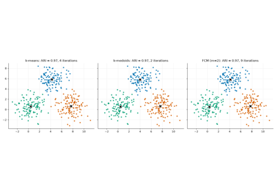
Hard versus fuzzy partitions: k-means, k-medoids, and FCM


Choosing the number of clusters with validity indices
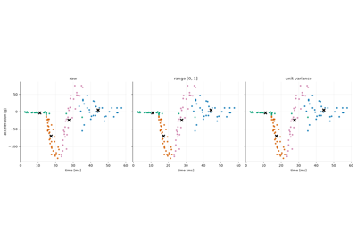
Feature scaling on real data: the motorcycle data set
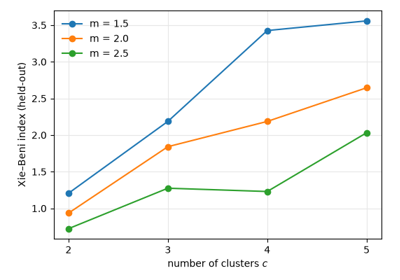
Working with pandas and scikit-learn: pipelines, DataFrames, and model selection

The fuzziness exponent m: from crisp cells to uniform memberships

Local optima and restarts: initializing Gustafson–Kessel on crossing lines

Distance norms: Euclidean, diagonal, and Mahalanobis fuzzy c-means
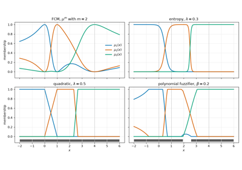
What makes a partition fuzzy: fuzzifiers, regularization, and annealing

Subtractive clustering: the number and location of clusters from density

Three routes to the number of clusters: merging, validity scan, and stability
Visualisation of clustering results#
Projecting high-dimensional data and cluster prototypes to the plane (PCA, Sammon mapping, fuzzy Sammon mapping), measuring how faithful the picture is, and fuzzy self-organizing maps.
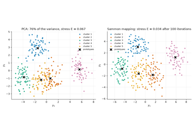
PCA versus Sammon mapping: preserving variance or distances
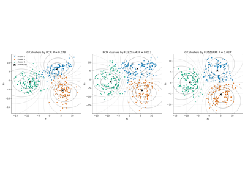
Fuzzy Sammon mapping: projecting clusters, not just data
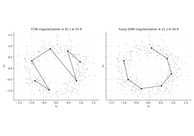
Fuzzy self-organizing map: ordered prototypes by regularized FCM
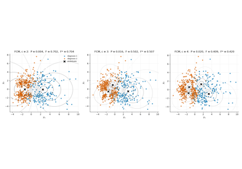
Visual validation of the number of clusters with FUZZSAM
Robust and shape-oriented variants of fuzzy c-means#
Fuzzy c-means assumes compact, roughly spherical clusters and is pulled away by outliers. These examples relax one assumption at a time: the possibilistic c-means (absolute typicalities, their scale parameters and the coincident-cluster failure), the possibilistic fuzzy c-means (memberships and typicalities with the a/b trade-off), noise clustering (a virtual noise cluster at constant distance δ), kernel fuzzy c-means (rings and moons with a kernel-width scan), fuzzy c-varieties and c-elliptotypes (lines as prototypes on crossing and collinear segments, compared with GK) and fuzzy c-shells (circles as prototypes on concentric and intersecting circles with radius recovery), volume prototypes with adaptive merging, and feature weighting (weighted FCM and SCAD) that learns which variables matter.
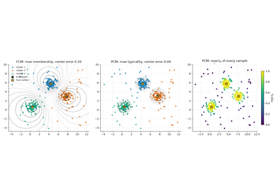
Possibilistic c-means: typicalities, scales and coincident clusters
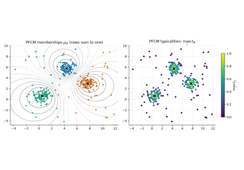
Possibilistic fuzzy c-means: memberships and typicalities together
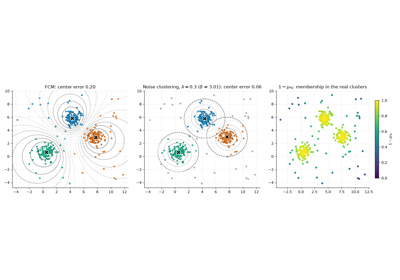
Noise clustering: a virtual cluster at constant distance δ
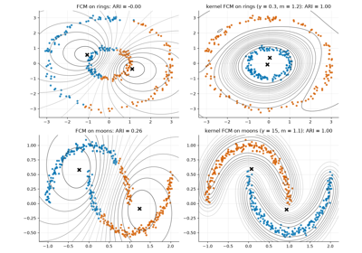
Kernel fuzzy c-means: rings and moons through the kernel trick
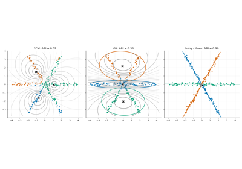
Fuzzy c-varieties: lines as prototypes, and the elliptotype compromise
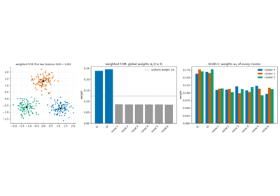
Learning which features matter: SCAD and the weighted FCM
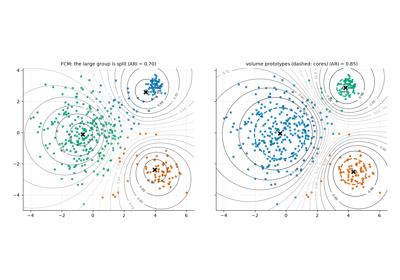
Volume prototypes and adaptive cluster merging
Graph-based fuzzy clustering#
Clusters of arbitrary shape found through a graph over the samples: the hybrid minimal spanning tree / Gath–Geva algorithm (inconsistent-edge cutting, volume-based splitting, GG refinement, validation of the number of clusters and similarity of the resulting fuzzy clusters) and fuzzy c-medoid clustering with geodesic distances on a k-nearest-neighbour graph, compared with fuzzy c-means and with clustering of the Isomap projection on rings, moons, spirals and the S-curve.
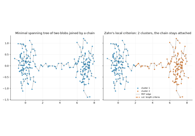
Minimal spanning tree clustering: cutting, splitting, and Gath–Geva refinement
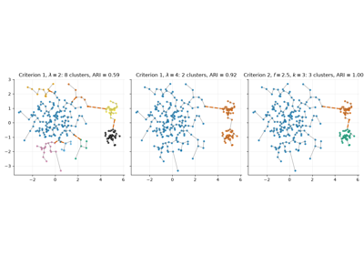
Inconsistent edges: Zahn’s criteria and the neighborhood depth
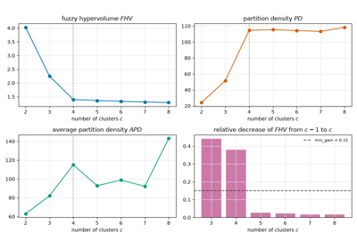
Number of clusters: volume-based validity and fuzzy cluster similarity
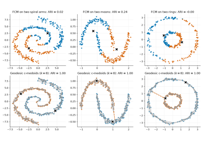
Geodesic-distance-based fuzzy clustering versus fuzzy c-means
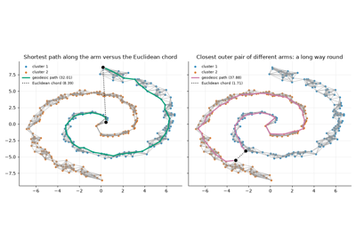
Geodesic paths, the S-curve, and clustering of the Isomap projection
Clustering for model identification#
Fuzzy clusters in the product space of inputs and outputs are local models: Takagi–Sugeno fuzzy models of static functions and of SISO / MIMO dynamic systems (modified Gath–Geva clustering), switching regression with fuzzy c-regression models, fuzzy classifiers from supervised clustering, supervised fuzzy partitions for decision trees, and hinging-hyperplane regression trees.
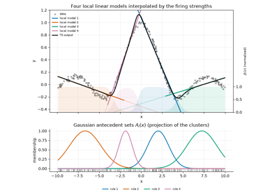
Takagi–Sugeno model of a static nonlinearity: clusters become rules
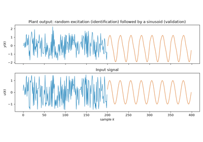
Identification of a nonlinear dynamic system with free-run validation
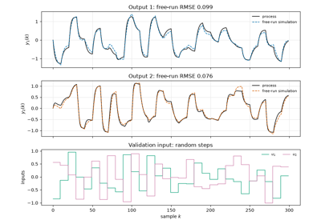
MIMO Takagi–Sugeno model with local MIMO ARX consequents
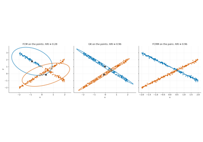
Fuzzy c-regression models: switching regression with crossing lines
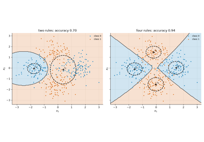
Supervised fuzzy clustering: classifier rules that carry class probabilities
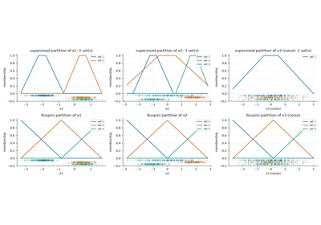
Supervised fuzzy partitions as a priori discretization for decision trees
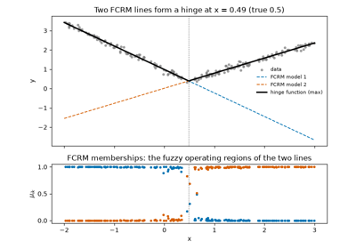
Hinging-hyperplane regression tree identified by fuzzy c-regression
Clustering of time series#
Fuzzy segmentation of multivariate time series with local PCA models (modified Gath–Geva clustering with a time prototype) against the bottom-up baseline, model-order selection of NARX models by false nearest neighbours with a cluster-based threshold, state-space reconstruction and prediction of chaotic series by clustering in the delay-embedded space, and model-free structure selection for models with mixed discrete and continuous inputs.
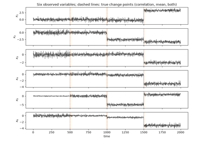
Fuzzy segmentation of a multivariate time series
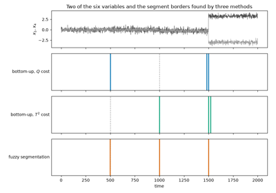
Bottom-up segmentation with PCA models versus fuzzy segmentation
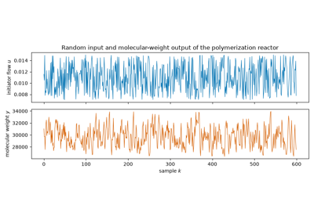
Model-order selection by false nearest neighbors with a cluster-based threshold
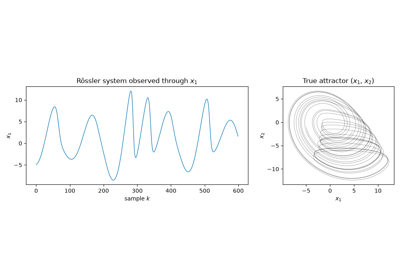
State-space reconstruction and prediction of a chaotic time series
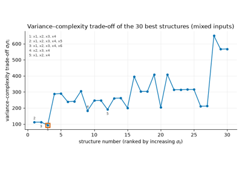
Model-free structure selection with mixed discrete and continuous inputs
Relational, categorical and mixed data#
Fuzzy clustering when the objects are not feature vectors or the mean is meaningless: relational fuzzy c-means as the exact dual of FCM on a matrix of squared distances and its non-Euclidean extension with the adaptive β-spread (NERF), fuzzy c-medoids on dynamic-time-warping dissimilarities of time series with the linear-complexity candidate search, fuzzy k-modes on categorical survey data, fuzzy k-prototypes on mixed records with the weight γ, Gower’s coefficient as a bridge between mixed data and the relational algorithms, and autocorrelation-based clustering of time series.
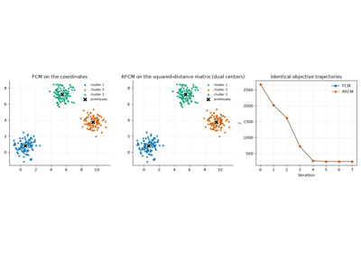
Relational fuzzy c-means and NERF for non-Euclidean data
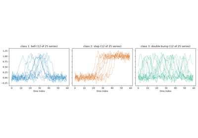
Fuzzy c-medoids on dynamic-time-warping dissimilarities of time series

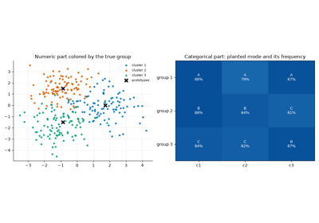
Fuzzy k-prototypes on mixed numeric and categorical data
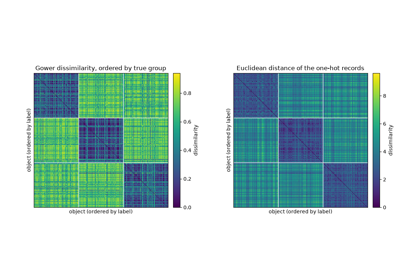
Gower’s dissimilarity versus one-hot encoding for mixed data
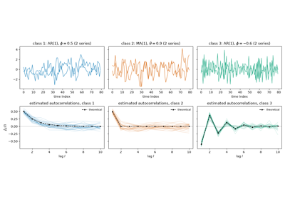
Autocorrelation-based fuzzy clustering of time series
Incomplete, very large and image data#
Fuzzy c-means meets three realities of data that the textbook setting
leaves out. Values are missing: the four strategies of Hathaway and
Bezdek (whole data, partial distances, optimal completion, nearest
prototype) are compared across missingness rates, and the imputation that
optimal completion delivers is examined. Data are very large or arrive
as a stream: random sample and extend, single-pass and online FCM are
compared with the literal FCM on 200 000 points in time and agreement, and
a drifting stream is processed chunk by chunk with partial_fit. The
data are an image: spatially constrained variants (FCM_S, FCM_S1/S2,
EnFCM, FGFCM, FLICM) are compared with pixel-wise FCM under increasing
Gaussian and salt-and-pepper noise, and the neighborhood weight and window
size are studied.

Clustering incomplete data: the four strategies of Hathaway and Bezdek

Imputation by clustering: accuracy of the completed values

Fuzzy c-means for very large data: rseFCM, spFCM and oFCM
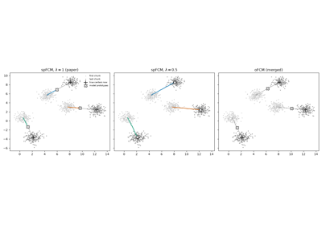
Clustering a drifting stream chunk by chunk with partial_fit
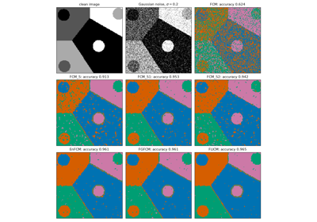
Image segmentation under noise: six spatially constrained FCM variants

Spatial FCM: the neighborhood weight and the window size
Beyond a single unsupervised run#
Fuzzy clustering that uses more than one data matrix and one random start: partial supervision by a few class labels (Pedrycz–Waletzky) and by must-link / cannot-link pairs (pairwise-constrained competitive agglomeration), co-clustering of the rows and columns of a document–term matrix (FCCM, Fuzzy CoDoK), collaborative clustering of the same objects at several data sites that exchange only partition matrices, and consensus clustering of a library of soft partitions (co-association matrix, consensus functions, evidence accumulation and the lifetime criterion for the number of clusters).
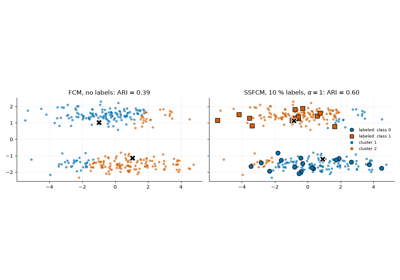
Fuzzy c-means with partial supervision: label fraction and weight
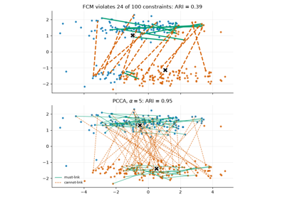
Pairwise constraints: must-link, cannot-link and competitive agglomeration
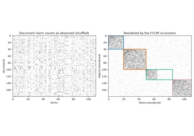
Fuzzy co-clustering of a document–term matrix
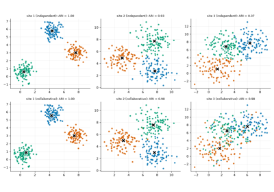
Collaborative fuzzy clustering across three data sites
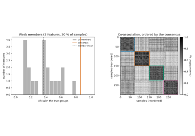
Consensus of soft clusterings: a library beats a single run
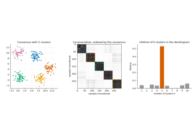
The lifetime criterion of evidence accumulation